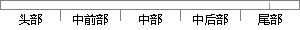

表5-2 时间管理模块的测试用例和结果
片段位置图

相似结果
相似片段：本课题对统一用户管理模块的需求进行了全面的分析,...测试用例设计 预期 结果 实际 结果 结 论 组织部门...表 5-2 同步功能测试表 功能模块名称 功能描述 ...
| 标题 | 《基于LDAP的统一用户管理系统的设计与实现》 |
| 对比库 | 中国学位论文全文数据库 |
| 作者 | 乔俊彪 |
| 机构 | 哈尔滨工业大学 |
| 分类 | 软件工程 |
| 年份 | 2012 |
| 相似率 | 69.23% （轻度抄袭） |
※ 片段修改建议 ※
近似词参考：- 结果：成果 成绩 成效 后果 了局 效果
系统自动生成语句：表5-2 时间管理模块的测试用例和成果
注：本片段修改建议为系统自动生成，仅供参考。